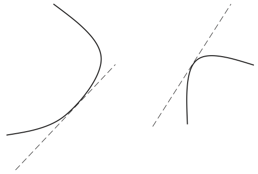
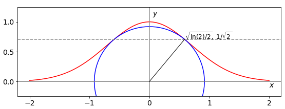
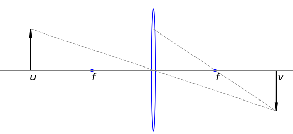

10 Minimizing or maximizing with constraints: Lagrange Undetermined Multipliers
Contents
10 Minimizing or maximizing with constraints: Lagrange Undetermined Multipliers#
10 Lagrange Multipliers#
Lagrange multipliers are used in statistical mechanics where they help in deriving the Boltzmann distribution; you may also come across them in minimizing the energy in a Hartree - Fock, self-consistent field (SCF) quantum chemistry calculation but they can be used in less exotic situations.
Undetermined multipliers appear in these very complex problems and you would therefore be forgiven if you thought that this method was extremely difficult, but it is not. It is instead, a very clever idea to solve a problem that has constraints. A constraint is a limitation imposed on a solution to a problem for example, ‘find the shape of a cylindrical can that maximizes its volume, but uses as little material as possible’. Alternatively, the constraint might be to find the best length to diameter of an animal’s leg bone that has to withstand running or jumping without breaking, and still be as light as possible; or simply find the shortest distance from a point to a curved line.
Because a maximum or minimum quantity is sought, differentiation is involved. However, in these problems, there are two functions, one is the constraint and the other the function that is to be maximized or minimized. By differentiating both expressions, the function and constraint we find their tangents which will probably not have the same value. The undetermined multiplier, conventionally called \(\lambda\), scales these tangents to be the same. Therefore,
In using this method, \(\lambda\) is found first, then the \(x\) and \(y\) values of the minimum or maximum. Of course, if there is more than one constraint there is an undetermined multiplier for each.

Figure 29. Tangents to two curves, \(\lambda\) scales them to be the same.
The convention is that \(f(x, y)\) represents the function, \(g(x, y) = 0\) the constraint, and \(\lambda\) the multiplier. The new function \(Q\) we have to solve is
which is done by taking (partial) derivatives of \(Q\) in \(x,\; y\), and \(\lambda\) and letting \(\partial Q/\partial x = \partial Q/\partial y= \partial Q/\partial \lambda = 0\) and solving the simultaneous equations,
Notice that differentiation is with respect to \(x\) and then with \(y\) as variables on both function and constraint. The method or algorithm is
\(\quad\)(a) Determine what is the function \(f\) and what the constraint \(g\).
\(\quad\)(b) Work out the four derivatives shown in (37).
\(\quad\)(c) Find the multiplier \(\lambda\) by solving the simultaneous equations (37).
\(\quad\)(d) Solve equations (37) for \(x\) and \(y\) using the constraint \(g(x,y)=0\) if necessary. This is the third derivative \(\displaystyle \frac{\partial Q}{\partial \lambda}=0\).
\(\quad\)(e) The \(x\) and \(y\) values calculated are those of the maximum and minimum and are substituted back into the equation describing the function to find its value.

Fig. 30 The Gaussian curve \(e^{-x^2}\) and the shortest distance from origin (radius) to the curve and the circle with this radius. The shortest distance to the curve is \(\approx 0.92\).
10.2 Examples#
An example shows how this algorithm works.
(i) Distance to a point#
Suppose you are set the problem to find the shortest distance from any point \((x_0, y_0)\), which could be the origin \((0, 0)\), to the Gaussian curve \(\displaystyle y = e^{-x^2}\), see fig 30.
(a) The Gaussian exponential defines the constraint, which means that the points we find must lie on this curve, and therefore \(g\) is defined as
The function to minimize is the distance from \((x_0, y_0)\) to a point \((x, y)\) on the curve and this is calculated using Pythagoras’ theorem,
The point \((x_0, y_0)\) is made the origin (0, 0) at the end of the calculation.
(b) Differentiating both \(f\) and \(g\) with respect to \(x\) and to \(y\) produces
(c) The two simultaneous equations, (37) after substituting the square root for \(f(x, y)\), equation (38), are,
(d) Substituting \(\lambda\) into the first of the two equations in (c) gives, after some simplification,
This equation defining \(x\), the point at the shortest distance from any point \((x_0, y_0)\) to the curve \(y = e^{-x^2}\), is after substituting for \(y\),
(e) The quantities \(x_0\) and \(y_0\) are constants in the last equation, which can be solved to find \(x\) and then this substituted into our function \(y = e^{-x^2}\) to obtain \(y\). The distance from the origin with \(x_0 = 0\) and \(y_0 = 0\) to the curve is found by solving \(\displaystyle -1+2e^{-2x^2}=0\) giving \(\displaystyle x=\pm\sqrt{\frac{\ln(2)}{2}} =\pm 0.5887\) and \(y=1/\sqrt{2}\) as the coordinates of the shortest distance, see Fig. 30. This distance itself is found by substituting into \(f (x, y)\), equation (38), and is \((\ln(2) + 1)/2 \approx 0.92\).
(ii) Object - image distance in a thin lens. Thin lens formula#
In this second example, the closest distance an object can be to its image, when using a thin lens, is found. The lens has a focal length \(f\), the object is at a distance \(u\) before, and the image \(v\), after the lens.
The lens maker’s formula
relates these distances to the focal length. The total object - image distance is \(u + v = c\), where \(c\) is a constant, and this distance must be minimized subject to the Lens Maker’s formula. The figure (31) shows the object and image distances which are taken to be positive.
Using the Lagrange multiplier method, the function is clearly the lens maker’s formula,
and the constraint is \( g(u,v)=u+v-c\).
Differentiating \(f(u,v)+\lambda g(u,v)\) with respect to \(u\) and then to \(v\) produces the two equations of the form of (37),
from which \(c\) has disappeared showing that its value was unimportant. Combining these equations gives \(u^{-2} = v^{-2}\) or \(u = v\) and consequently from the lens maker’s formula \(u = v = 2f\) is the closest distance for an image-object relationship to hold as shown in figure (31).

Fig. 31 Object and image distances with a thin lens.